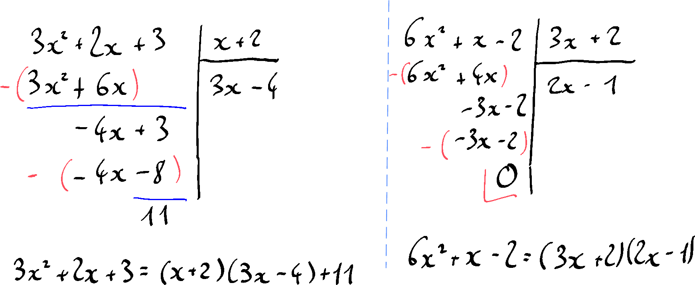
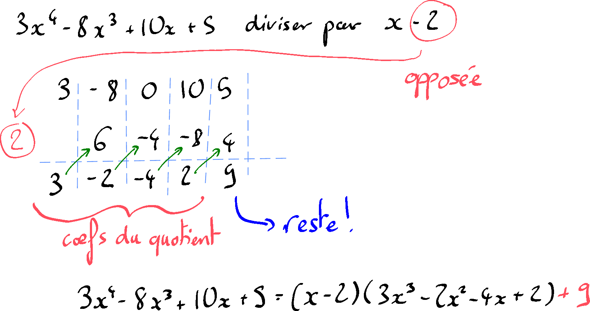

Division polynômial
Table of Contents
1. Introduction
On étudie en arithmétique la division des nombres entiers avec reste. Soit \(D\) et \(d\) (\(d \neq 0\)) deux nombres entiers; il existe exactement deux nombres entiers \(q\) et \(r\) tels que :
\[D = dq + r, \text{ avec } \ r \lt d.\]
Exemples :
- \(5143 \div 11 = 467 \text{ reste } 6 \iff 5143 = 11\cdot 467 + 6\)
- \(4823 \div 13 = 371 \text{ reste } 0 \iff 4823 = 13\cdot 371 + 0\)
On peut définir de la même manière la division (euclidienne ou avec reste) des polynômes. Elle est basée sur le théorème fondamental que nous admettrons sans démonstration:
Théorème. Soit \(D\) et \(d\) deux polynômes à une variable (\(d \neq 0\)). Il existe exactement deux polynômes \(q\) et \(r\) tels que :
\[D = dq + r, \text{ avec } \deg(r) \lt \deg(d).\]
C'est la division polynomiale.
Terminologie. Les polynômes \(D\), \(d\), \(q\) et \(r\) sont respectivement le dividende, le diviseur, le quotient et le reste de la division.
Exemple.

Remarque. Il faut prévoir dans la division de la place pour les puissances qui n'apparaissent pas dans le dividende.
2. Le schéma d'Horner
Il existe une autre disposition pratique des calculs dans le cas de la division par un binôme unitaire du premier degré : le schéma de Horner. Il s'agit d'un calcul avec uniquement les coefficients du polynôme.
Exemple.

{kind=link}
{kind=link}
Étonnamment, la méthode d'Horner pour diviser les polynômes permet également de les évaluer (c'est-à-dire de calculer la valeur que l'on obtient en remplaçant la variable par un nombre).
En effet, le reste de la division d'un polynôme \(P\) par \((x-a)\) est la valeur de \(P\) qu'on obtient en substituant \(a\) pour \(x\).
Par exemple,
\[3x^4-8x^3+10x+5 = (x-\textcolor{red}{2})(3x^3-2x^2-4x+2) + \textcolor{green}{9}\]
hors,
\[3(\textcolor{red}{2})^4 - 8(\textcolor{red}{2})^3 + 10(\textcolor{red}{2})+5 = \textcolor{green}{9}.\]
Pourquoi ? Cela devient clair lorsque l'on remplace \(x\) par \(2\) du côté droit de l'égalité de la division :
\[\underbrace{\overbrace{(\textcolor{red}{2}-\textcolor{red}{2})}^0(3(\textcolor{red}{2})^3-2(\textcolor{red}{2})^2-4(\textcolor{red}{2})+2)}_{0} + \textcolor{green}{9} = \textcolor{green}{9}.\]
Remarque. Il est souvent plus facile d'effectuer la division et de vérifier le reste que de substituer la variable et de calculer !
Exercice. Vérifiez dans cet exercice que le reste de la division par \((x-a)\) donne la même réponse que l'évaluation de \(P\) en \(a\). Quelle méthode trouvez-vous plus facile pour trouver cette réponse ?
3. Le schéma d'Horner pour factoriser
Notre remarque précédente conduit à une conséquence pragmatique : lorsque nous identifions une solution \(x_0\) de l'équation \(P = 0\) pour un polynôme \(P\), nous pouvons affirmer que \(P\) est divisible par \((x - x_0)\). En effet, la division de \(P\) par \((x - x_0)\) s'effectue sans reste.
Cette propriété nous permet d'obtenir une factorisation de \(P\) en effectuant simplement cette division.
Exemple. Considérons l'équation
\[x^3 − 2x^2 − 11x + 12= 0. \]
On devine la solution \(x = 1\). Nous essayons donc de diviser par \((x-1)\):

Nous avons donc
\[x^3 − 2x^2 − 11x + 12 = (x^2-x-12)(x-1) = (x+3)(x-4)(x-1),\]
et nous voyons que les solutions de l'équation originale sont \(-3\), \(4\) et \(1\). \(S = \{1;4;-3\}\)
Remarque. Mais comment devinons-nous la solution originale ? On peut souvent s'appuyer sur le «principe des suspects habituels». Lorsqu'on est confronté à un polynôme \(P\) à une seule variable de degré supérieur à \(2\), pour lequel on ne voit aucune autre méthode de factorisation, il est judicieux de tester les «suspects habituels» : \(1\), \(-1\), \(2\), \(-2\), \(3, \dots\) Rappelez-vous, il est plus facile de diviser \(P\) par \((x-a)\) (en utilisant le schéma de Horner) que de calculer directement \(P\) évalué en \(a\). Si vous obtenez un reste de \(0\), alors vous avez trouvé une factorisation !
{kind=link}
{kind=link}